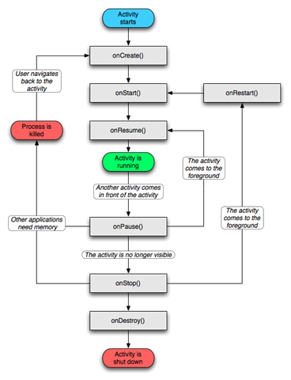
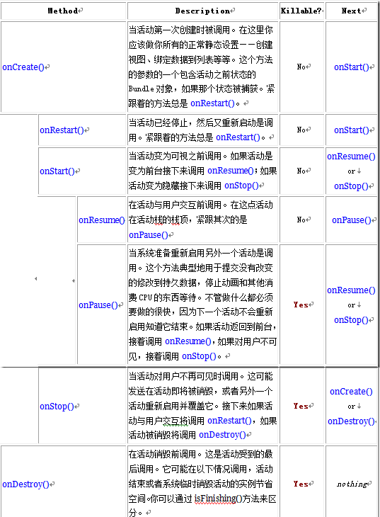

组件生命周期
引言
应用程序组件有一个生命周期——一开始Android实例化他们响应意图，直到结束实例被销毁。在这期间，他们有时候处于激活状态，有时候处于非激活状态；对于活动，对用户有时候可见，有时候不可见。组件生命周期将讨论活动、服务、广播接收者的生命周期——包括在生命周期中他们可能的状态、通知状态改变的方法、及这些状态的组件寄宿的进程被终结和实例被销毁的可能性。
本文主要讨论活动的生命周期及他们可能的状态、通知状态改变的方法。分为以下三部分：
1、活动生命周期2、保存活动状态
3、协调活动
1、活动生命周期
一个活动有三个基本状态：
1) 激活状态或运行状态，这时它运行在屏幕的前台（处于当前任务活动栈的最上面）。这个活动有用户的操作的焦点。
2) 暂停状态，这时活动失去焦点但是它对用户仍可见。也就是说，另一个活动在它的上面且那个活动是透明的或者没有覆盖整个屏幕，因此通过它可以看见暂停状态的活动。一个暂停的活动完全是活着的（它维护着所有的状态和成员信息，且仍然依附在窗口管理器），但是当内存极小时可以被系统杀掉。
3) 停止状态，这时活动完全被其他活动掩盖。它仍然保留所有状态和成员信息，但是对用户它不可见，因此它的窗口时隐藏的且当其他地方需要内存时它往往被系统杀掉。
如果一个活动被暂停或停止，系统可以将它从内存移除，通过要求它结束（通过调用它的finish()方法），或简单地杀掉它的进程。当它再次显示给用户时，必须要完全重新启动和恢复到之前的状态。随着活动从一个状态转为另一个状态，通过调用下面的受保护的方法通知该改变：
void onCreate(Bundle saveInstanceState)void onStart()
void onRestart()
void onResume()
void onPause()
void onStop()
void onDestroy()
所有这些方法都是钩子，你可以重写当状态改变时做适当的工作。所有的活动必须要实现onCreate()去做一些初始化的设置，当对象第一次实例化的时候。很多活动也会实现onPause()去提交数据修改或准备停止与用户交互。
将他们合并在一起，这七个方法定义了活动的整个生命周期。有三个嵌套的循环，你可以通过这七个方法监视：
活动的整个生命时间，从第一次调用onCreate()开始直到调用onDestroy()结束。一个活动在onCreate()中做所有的“全局”状态的初始设置，在onDestroy()中释放所有保留的资源。举例来说，有一个线程运行在后台从网络上下载数据，它可能会在onCreate()中创建线程，在onDestroy()中结束线程。
活动的可视生命时间，从调用onStart()到相应的调用onStop() 。在这期间，用户可以在屏幕上看见活动，虽然它可能不是运行在前台且与用户交互。在这两个方法之间，你可以保持显示活动所需要的资源。举例来说，你可以在onStart()中注册一个广播接收者监视影响你的UI的改变，在onStop() 中注销。因为活动在可视和隐藏之间来回切换，onStart()和onStop() 可以调用多次。
活动的前台生命时间，从调用onResume()到相应的调用onPause()。在这期间，频繁地在重用和暂停状态转换——例如，当设备进入睡眠状态或一个新的活动启动时调用onPause()，当一个活动返回或一个新的意图被传输时调用onResume()。因此，这两个方法的代码应当是相当轻量级的。
下面这个图解释了这三个循环和状态之间状态的可能路径。着色的椭圆表示活动的主要状态，矩形表示当活动在状态之间转换时你可以执行的回调方法。

下面的表格对每个方法更详细的描述和在活动的整个生命周期中的定位。

注意上面表格的Killable列，它表示当方法返回时没有执行活动的其它代码，系统是否能杀死活动寄宿的进程。三个方法（onPause()、onStop()、onDestroy()）标记为Yes。因为onPause()是唯一一个保证在进程被杀之前会调用的，因此你应该使用onPause()来写任何持久化存储数据。
被标记为No的方法保护活动寄宿的进程在他们调用的时候不会被杀掉。因此活动是可杀掉状态，例如onPause()返回到onResume()调用期间。直到onPause()再次返回，活动是不可杀掉的。其实，没有标记为Killable的活动也是可以系统被杀掉的，不过这仅仅发生在极端困难的情况下，没有有任何其他资源可用。
2、保存活动状态
当系统而不是用户关闭一个活动来节省内存时，用户可能希望返回到活动且是它之前的状态。为了获得活动被杀之前的状态，你可以执行活动的onSaveInstanceState()方法。Android在活动容易被销毁前调用这个方法，也就是调用onPause()之前。该方法的参数是一个Bundle对象，在这个对象你可以以名值对记录活动的动态状态。当活动再次启动时，Bundle同时被传递到onCreate()和调用onCreate()之后的方法，onRestoreInstanceState()，因此使用一个或两个可以重新创建捕获的状态。
因为onSaveInstanceState()方法不总是被调用，你应该仅使用onSaveInstanceState()它来记录活动的临时状态，而不是持久的数据。应该使用onPause()来存储持久数据。
3、协调活动
当一个活动启动另一个活动，他们都经历生命周期转换。一个暂停或许是停止，然而另一个启动。有时，你可能需要协调这些活动。生命周期的回调顺序是明确界定的，特别是当这两个活动在同一个进程中：
1) 当前活动的onPause()方法被调用。
2) 接下来，启动活动的onCreate()、onStart()、onResume()方法按序被调用。
3) 然后，如果获得不再在屏幕上可见，它的onStop()方法被调用。
修正：第一节——活动生命周期中的表格第一、二行中的第二列（description）中的onRestart()应该为onStart()。